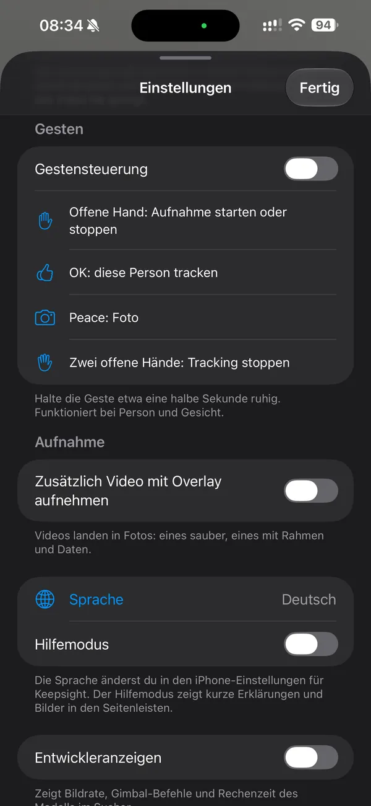

Gesten, Sprache, Countdown
Die Kamera bedienen, wenn du selbst vor ihr stehst.

Alle drei findest du in der linken Leiste unter Fernsteuerung.
Handgesten
Gesten funktionieren, wenn als Motiv Person oder Gesicht gewählt ist. Halte die Geste etwa eine halbe Sekunde ruhig. Oben in der Mitte füllt sich dabei ein Balken.
| Geste | Wirkung |
|---|---|
| Offene Hand | Videoaufnahme starten oder stoppen. |
| OK-Zeichen | Diese Person als Ziel wählen und das Tracking starten. |
| Peace-Zeichen | Ein Foto aufnehmen. |
| Zwei offene Hände | Das Tracking stoppen. |
Sprachbefehle
Schalte Sprachsteuerung ein und erlaube Mikrofon und Spracherkennung. Die Befehle sprichst du in der Sprache der App.
| Du sagst | Wirkung |
|---|---|
| „Foto“ | Ein Foto aufnehmen. |
| „Video starten“ oder „Aufnahme starten“ | Die Videoaufnahme starten. |
| „Stopp“ | Aufnahme, Serie oder laufenden Countdown beenden. |
Solange die Sprachsteuerung an ist, bleibt das Mikrofon eingeschaltet. Das iPhone zeigt das mit dem orangen Punkt an.
Countdown, Blitz und Ton
Löst du per Geste oder Sprache aus, läuft zuerst ein Countdown, damit du dich hinstellen kannst.
- Countdown: Aus, 3, 5 oder 10 Sekunden. Die Sekunden laufen gross im Bild mit.
- Bestätigungsblitz: Die LED blinkt in immer kürzeren Abständen bis zur Aufnahme.
- Bestätigungston: Ein kurzer Ton zu jedem Blitz.
Ohne Countdown gibt es einen einzelnen Blitz und Ton als Bestätigung. Der Auslöser am Bildschirm löst immer sofort aus.